V4 不规则LPS：实际计算与离散研究
COMPLETED · 接受到 3.60000000 ms / 3.6 ms
EXPLORATORY_UNCALIBRATED · MECHANICAL_SHEAR_SURROGATE
开发与科研报告 · 复现说明
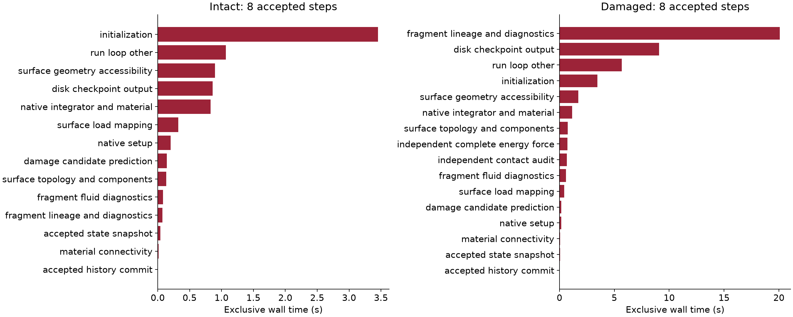
FIG_01_NATIVE_PERFORMANCE_BREAKDOWN
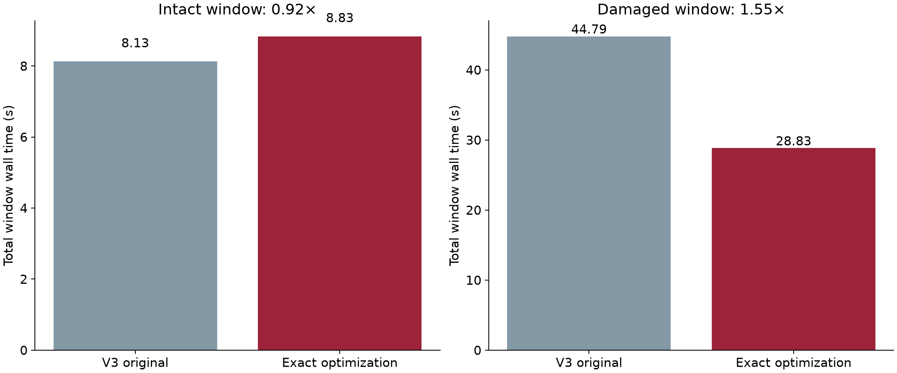
FIG_02_PERFORMANCE_OPTIMIZATION
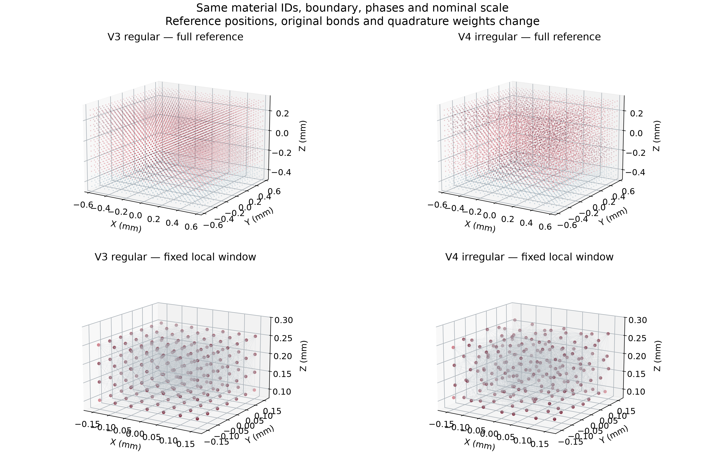
FIG_03_REFERENCE_POINT_CLOUDS
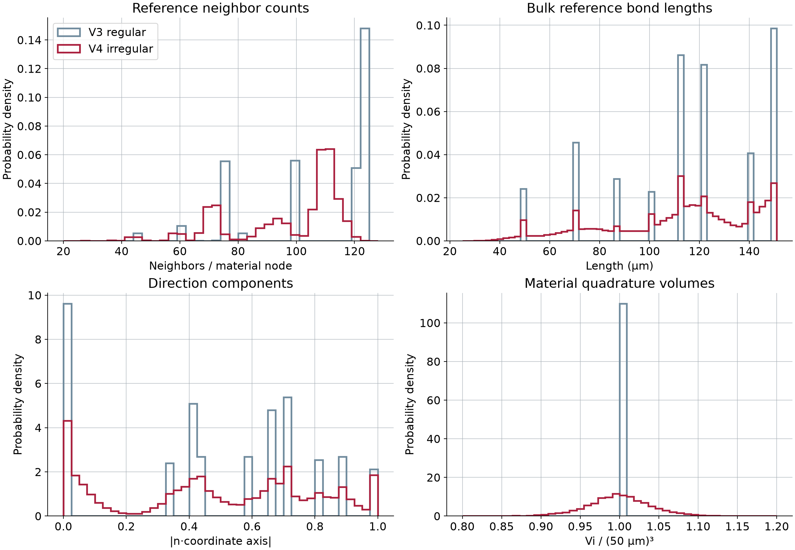
FIG_04_NEIGHBORHOOD_AND_VOLUME
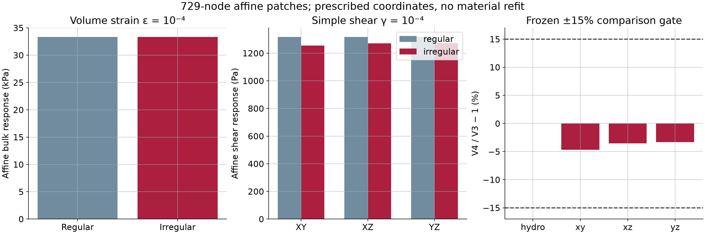
FIG_05_ELASTIC_RESPONSE
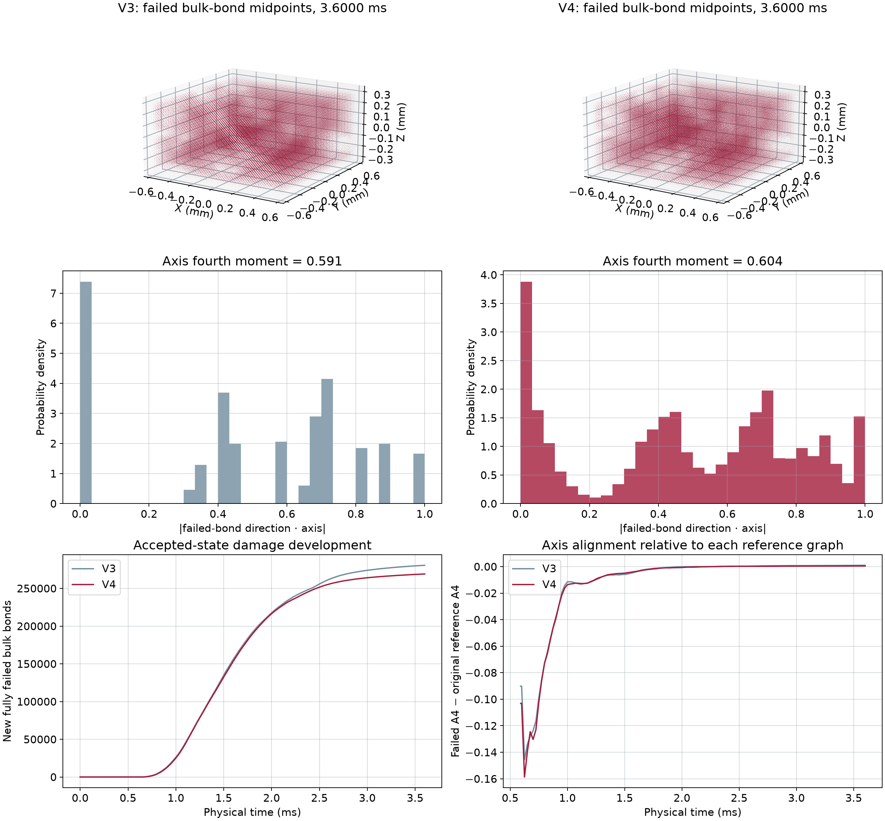
FIG_06_CRACK_PATH_COMPARISON
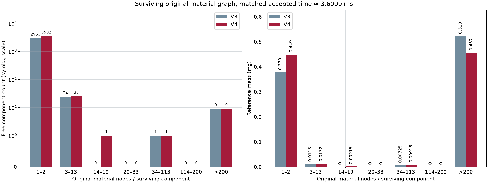
FIG_07_FRAGMENT_SIZE_DISTRIBUTION
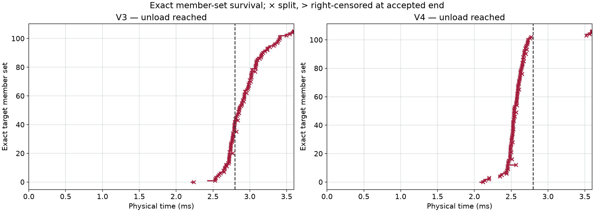
FIG_08_FRAGMENT_SURVIVAL
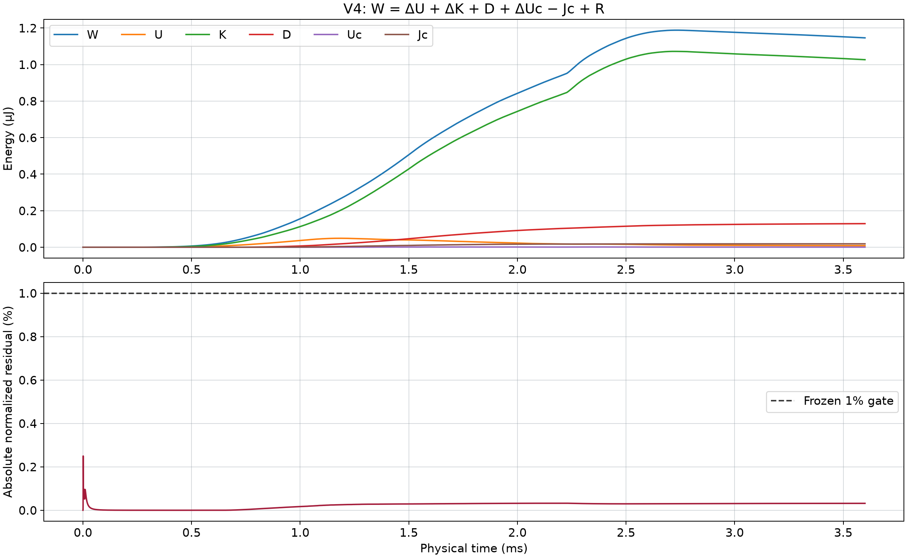
FIG_09_COMPLETE_ENERGY_LEDGER
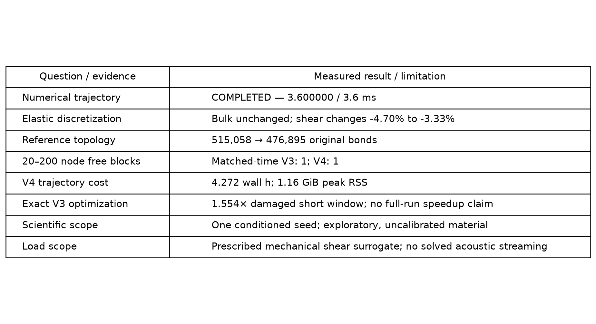
FIG_10_SCIENTIFIC_OUTCOME
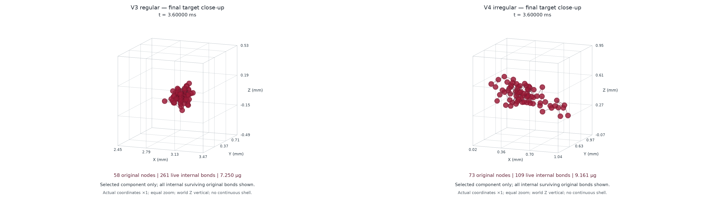
FIG_SUPP_FINAL_TARGET_CLOSEUPVIDEO_01_REGULAR_VS_IRREGULAR_FRACTURE
VIDEO_02_IRREGULAR_FRAGMENT_EVOLUTION